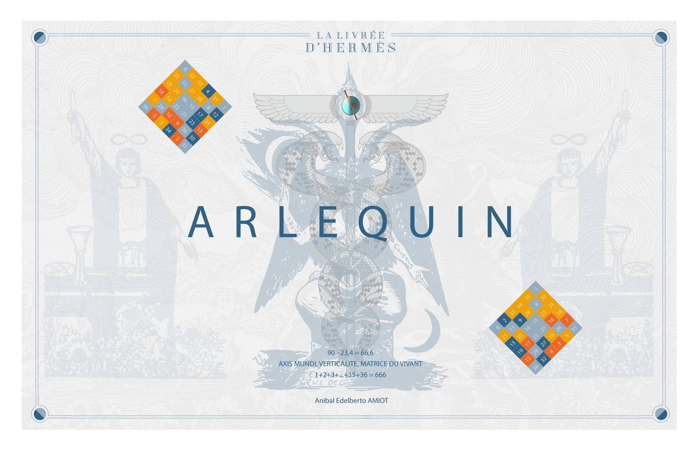
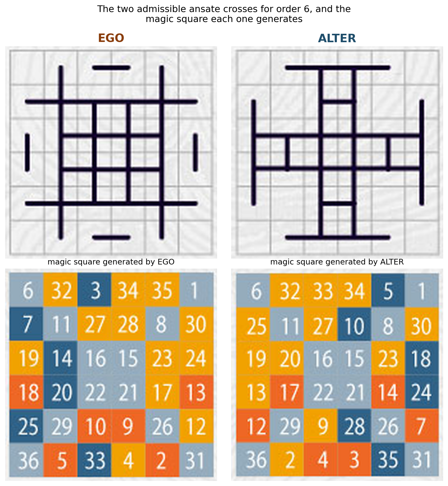
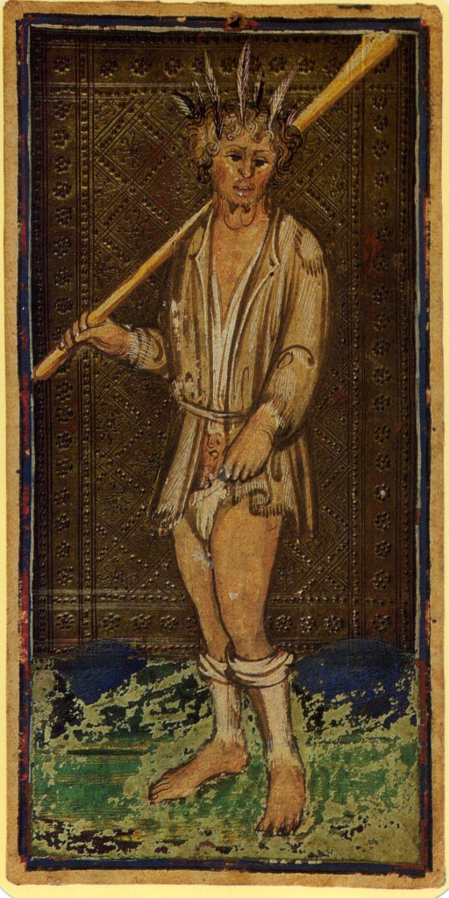
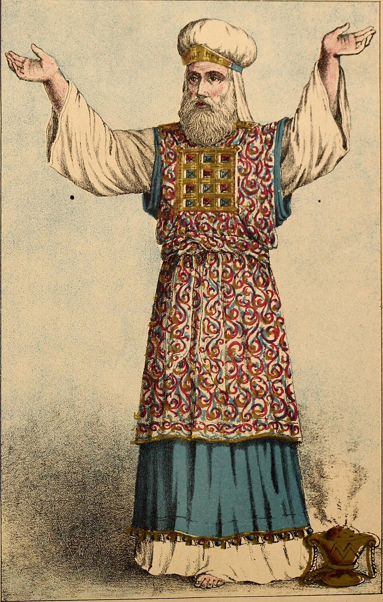
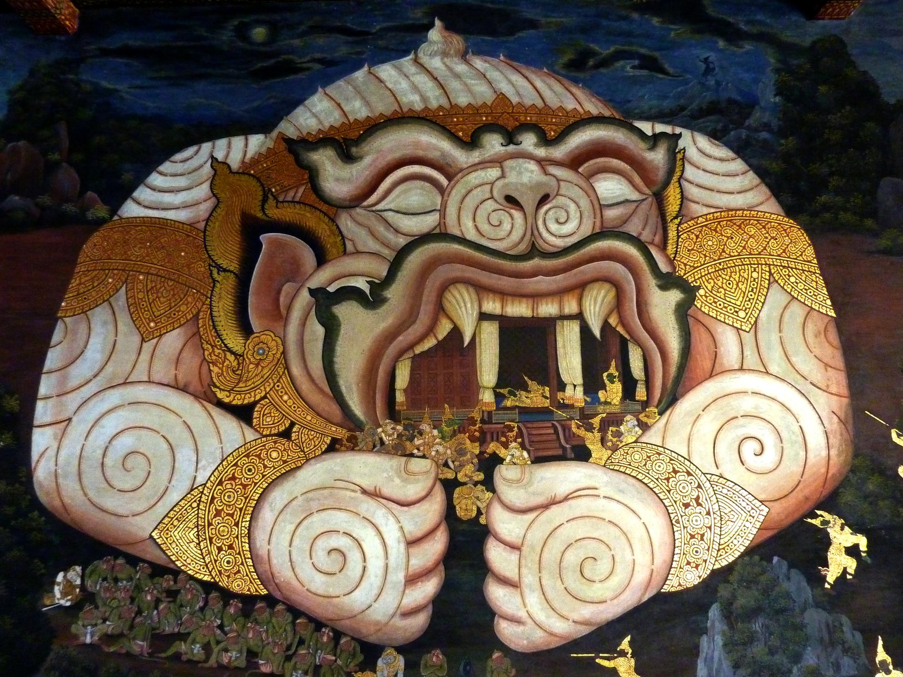

Articles
Réflexions et recherches autour de La Livrée d'Hermès

Arlequin trismégiste : la livrée de Mercure
Publié le 3 septembre 2026
Pourquoi Apollinaire referme un poème sur "l'arlequin trismégiste" ? La naissance d'Hermès, le témoignage de Niklaus et Crowley, et le geste que Baphomet partage avec le Bateleur.
Lire l'article →
Verticalité, damier, mosaïque et échiquier
Publié le 3 septembre 2026
De l'échiquier des 64 au pavé mosaïque, en passant par le Yi King, Arlequin et Baphomet : comment un même axe vertical traverse ce projet, du chiffre de la bête à la mesure de l'ange.
Lire l'article →
Foliage, ou l'art des bouffons de cour
Publié le 2 septembre 2026
Avant d'être une carte à jouer, le Fou est un dieu mineur banni de l'Olympe pour ses railleries. De Mômos aux bouffons de cour de la Renaissance, une traversée de la fonction de miroir grotesque que le fou tend au prince.
Lire l'article →
L'habit du grand prêtre : le carré caché dans le tashbetz
Publié le 2 septembre 2026
Dans le livre de l'Exode, deux détails du vêtement du grand prêtre — la tunique « en damier » et le carré du pectoral — dessinent, bien avant tout carré magique, la même intuition qui traverse La Livrée d'Hermès.
Lire l'article →
Hanuman et Arlequin : une même fonction du messager
Publié le 31 août 2026
Deux traditions théâtrales indépendantes, deux figures bariolées porteuses d'un bâton — le rapprochement entre le fidèle compagnon du Ramayana et l'Arlequin de la commedia dell'arte n'est pas qu'une coïncidence visuelle.
Lire l'article →D'autres articles suivront — sur l'arithmogéométrie, le symbolisme des carrés magiques, et les traditions du vêtement porteur de sens à travers le monde.